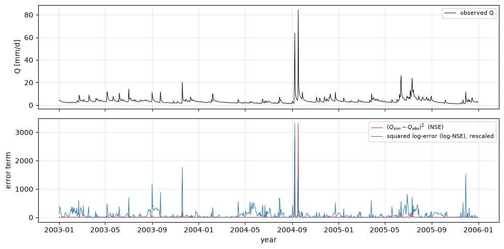
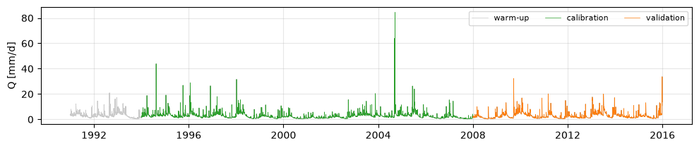
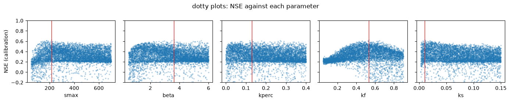
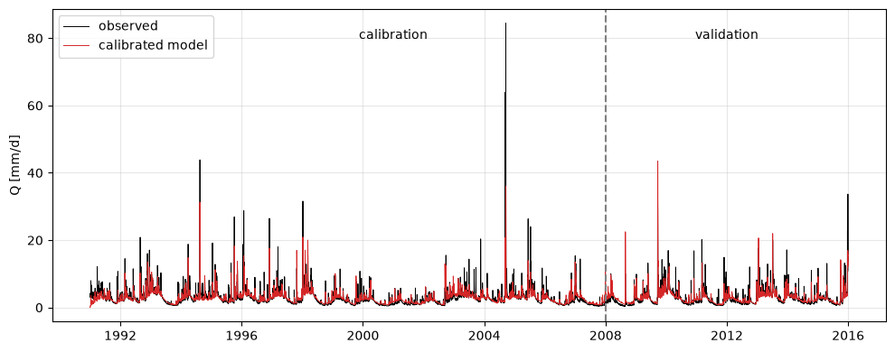
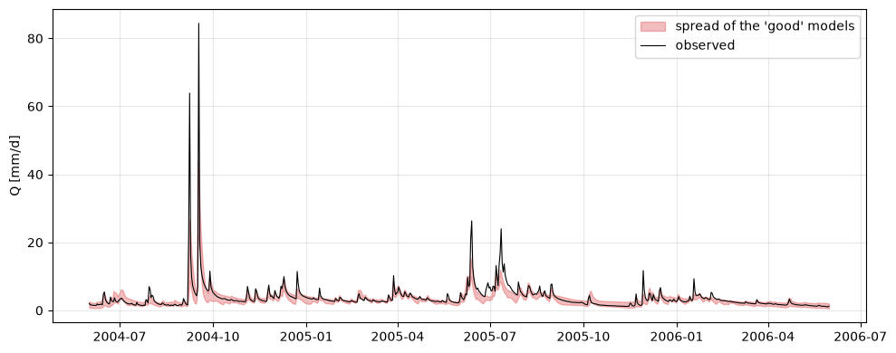

Lecture 8, Calibrating a hydrological model#
The model of Lecture 7 has five parameters, and none of them can be measured in the field: \(S_{max}\), \(\beta\), \(k_{perc}\), \(k_f\) and \(k_s\) are effective quantities for the whole catchment. We infer them by running the model with many parameter sets and keeping the ones that make the simulated streamflow look most like the observed streamflow. That inference is calibration.
Calibration raises four questions this lecture works through:
“Look most like” — measured how? (objective functions)
How do we know the calibrated model will work on data it was not fitted to? (split-sample testing)
If the method works perfectly on a problem where we know the answer, why does it only get part-way on real data? (an identical-twin test)
If several very different parameter sets fit almost equally well, which one is right? (equifinality)
import sys
if "google.colab" in sys.modules:
%pip install -q numpy pandas matplotlib scipy
import numpy as np
import pandas as pd
import matplotlib.pyplot as plt
df = pd.read_csv("data/chattooga_daily.csv", comment="#",
parse_dates=["date"], index_col="date")
P = df["prcp_mm"].to_numpy(float)
Ep = df["pet_mm"].to_numpy(float)
Qobs = df["q_mm"].to_numpy(float)
The model, vectorised#
This is the Lecture 7 model with one change: the parameters can be arrays, so a whole ensemble of parameter sets is stepped through the loop at once. Running 3000 parameter sets then costs one pass over the record instead of 3000, which is what makes Monte Carlo and population-based optimisers practical.
PARAM_NAMES = ["smax", "beta", "kperc", "kf", "ks"]
def simulate(theta, prcp=P, pet=Ep):
"""Lumped model of Lecture 7. theta: (n_sets, 5) or (5,). Returns (n_time,) or (n_time, n_sets)."""
th = np.atleast_2d(np.asarray(theta, float))
smax, beta, kperc, kf, ks = (th[:, i] for i in range(5))
S = 0.5 * smax.copy()
F1 = np.zeros_like(smax); F2 = np.zeros_like(smax); R = np.zeros_like(smax)
q = np.empty((len(prcp), smax.size))
for t in range(len(prcp)):
p, ep = prcp[t], pet[t]
s = np.clip(S / smax, 0.0, 1.0)
runoff = p * s ** beta
aet = ep * s * (2.0 - s)
S = S + p - runoff - aet
runoff = runoff + np.maximum(S - smax, 0.0); S = np.minimum(S, smax)
aet = aet + np.minimum(S, 0.0); S = np.maximum(S, 0.0)
perc = kperc * S * s ** 3
S = S - perc
F1 = F1 + runoff; R = R + perc
o1 = kf * F1; F1 = F1 - o1
F2 = F2 + o1; o2 = kf * F2; F2 = F2 - o2
qs = ks * R; R = R - qs
q[t] = o2 + qs
return q.squeeze()
BOUNDS = np.array([[50.0, 700.0], # smax [mm]
[0.5, 6.0], # beta [-]
[0.0, 0.4], # kperc [1/day]
[0.05, 0.9], # kf [1/day]
[0.003, 0.15]]) # ks [1/day]
1) Objective functions#
An objective function turns the mismatch between two time series into one number. Four are in common use in hydrology; each rewards a different kind of agreement.
Nash–Sutcliffe efficiency (NSE) compares the model against the mean of the observations:
NSE \(= 1\) is perfect, NSE \(= 0\) means the model is no better than predicting the mean flow every day, and NSE \(< 0\) is worse than that. Because the errors are squared, NSE is dominated by the largest flows — a good NSE means the flood peaks are right.
Log-NSE is NSE computed on \(\ln(Q + \varepsilon)\). Taking logs compresses the peaks and stretches the low flows, so log-NSE measures how well the model does in the dry season.
Kling–Gupta efficiency (KGE) breaks the error into three parts — correlation \(r\), a variability ratio \(\alpha = \sigma_{sim}/\sigma_{obs}\), and a bias ratio \(\beta = \mu_{sim}/\mu_{obs}\) — and combines them:
RMSE is just the root-mean-square error, in mm day⁻¹ — interpretable, but it grows with the size of the flows so it cannot be compared between catchments.
def nse(obs, sim):
m = np.isfinite(obs) & np.isfinite(sim)
o, s = obs[m], sim[m]
return 1.0 - np.sum((s - o) ** 2) / np.sum((o - o.mean()) ** 2)
def lognse(obs, sim, eps=None):
eps = eps if eps is not None else 0.01 * np.nanmean(obs)
return nse(np.log(obs + eps), np.log(sim + eps))
def kge(obs, sim):
m = np.isfinite(obs) & np.isfinite(sim)
o, s = obs[m], sim[m]
r = np.corrcoef(o, s)[0, 1]
return 1.0 - np.sqrt((r - 1) ** 2 + (s.std() / o.std() - 1) ** 2
+ (s.mean() / o.mean() - 1) ** 2)
def rmse(obs, sim):
m = np.isfinite(obs) & np.isfinite(sim)
return np.sqrt(np.mean((sim[m] - obs[m]) ** 2))
Score one simulation — the “first guess” parameters from Lecture 7 — with all four metrics. They disagree, because they are measuring different things.
t = df.index
q1 = np.asarray(simulate([250.0, 2.5, 0.05, 0.40, 0.015]))
ev = t >= "1993-01-01" # drop the warm-up
print(f" NSE = {nse(Qobs[ev], q1[ev]):.3f}")
print(f" logNSE = {lognse(Qobs[ev], q1[ev]):.3f}")
print(f" KGE = {kge(Qobs[ev], q1[ev]):.3f}")
print(f" RMSE = {rmse(Qobs[ev], q1[ev]):.3f} mm/d")
NSE = 0.638
logNSE = 0.799
KGE = 0.735
RMSE = 1.573 mm/d
Why the disagreement? Plot the two error terms that NSE and log-NSE actually sum: the squared error \((Q_{sim} - Q_{obs})^2\) and its logarithmic counterpart.
eps = 0.01 * np.nanmean(Qobs)
sq = (q1 - Qobs) ** 2
sqlog = (np.log(q1 + eps) - np.log(Qobs + eps)) ** 2
win = (t >= "2003-01-01") & (t < "2006-01-01")
fig, ax = plt.subplots(2, 1, figsize=(10, 5), sharex=True)
ax[0].plot(t[win], Qobs[win], color="black", lw=0.7, label="observed Q")
ax[0].set_ylabel("Q [mm/d]"); ax[0].legend(fontsize=8); ax[0].grid(alpha=0.3)
ax[1].plot(t[win], sq[win], color="tab:red", lw=0.7, label="$(Q_{sim}-Q_{obs})^2$ (NSE)")
ax[1].plot(t[win], sqlog[win] * sq[win].max() / sqlog[win].max(), color="tab:blue",
lw=0.7, label="squared log-error (log-NSE), rescaled")
ax[1].set_ylabel("error term"); ax[1].set_xlabel("year")
ax[1].legend(fontsize=8); ax[1].grid(alpha=0.3)
fig.tight_layout()

The plain squared error is a spike train: it is essentially zero except during a handful of flood days, so NSE is a flood metric — a model can have a good NSE and still be useless in the dry season. The squared log-error is spread evenly across wet and dry periods, so log-NSE weights all flows and rewards getting the recessions and low flows right. KGE sits between the two and additionally penalises the model for having the wrong mean or the wrong variability.
The objective function is a modelling choice: for a flood study, calibrate on NSE; for a drought or water-supply study, on log-NSE or KGE; often on a weighted combination. For the rest of this lecture we calibrate on NSE.
2) Split-sample testing#
A model with five free parameters can be tuned to fit almost any single record. The test that matters is whether it then works on a different period. So we divide the 25-year record into three:
warm-up (1991–1993) — run but not scored, to forget the initial guess;
calibration (1994–2007) — the parameters are chosen to maximise NSE here;
validation (2008–2015) — never seen during calibration; the honest test.
warmup = df.index < "1994-01-01"
cal = (df.index >= "1994-01-01") & (df.index < "2008-01-01")
val = df.index >= "2008-01-01"
fig, ax = plt.subplots(figsize=(10, 2.2))
ax.plot(t, Qobs, color="0.6", lw=0.5)
for m, c, lbl in [(warmup, "0.8", "warm-up"), (cal, "tab:green", "calibration"),
(val, "tab:orange", "validation")]:
ax.plot(t[m], Qobs[m], color=c, lw=0.5, label=lbl)
ax.set_ylabel("Q [mm/d]"); ax.legend(ncol=3, fontsize=8); ax.grid(alpha=0.3)
fig.tight_layout()
def score(theta, mask, metric=nse):
return metric(Qobs[mask], np.asarray(simulate(theta))[mask])

3) An identical-twin test#
Before calibrating a real catchment it is worth checking the machinery on a problem where the answer is known. In an identical-twin (or synthetic) experiment we generate a streamflow series by running the model with a chosen “true” parameter set, then hand that series to the calibration as if it were an observation and see whether the true parameters come back.
We use a global optimiser, differential_evolution: it does not get stuck in local
optima, needs no gradients, and SciPy can evaluate a whole population in one vectorised
call. Each calibration below takes roughly half a minute.
from scipy.optimize import differential_evolution
def calibrate(target, mask=cal, maxiter=40, popsize=12):
"""Return the parameter set that maximises NSE against `target` over `mask`."""
o = target[mask][:, None]
denom = np.nansum((o - np.nanmean(o)) ** 2)
def cost(x): # x: (5, popsize)
s = simulate(x.T)[mask]
return np.nansum((s - o) ** 2, 0) / denom
r = differential_evolution(cost, BOUNDS, vectorized=True, updating="deferred",
seed=1, maxiter=maxiter, popsize=popsize, tol=1e-6)
return r.x
theta_true = np.array([220.0, 3.0, 0.08, 0.45, 0.012])
Q_true = np.asarray(simulate(theta_true)) # the synthetic "observations"
# (a) calibrate against the clean synthetic series
theta_clean = calibrate(Q_true)
# (b) calibrate against the same series with 15% random noise added
noise = np.random.default_rng(42).standard_normal(len(Q_true))
Q_noisy = np.maximum(Q_true * (1.0 + 0.15 * noise), 0.0)
theta_noisy = calibrate(Q_noisy)
tbl = pd.DataFrame({"true": theta_true,
"recovered, clean": theta_clean,
"recovered, 15% noise": theta_noisy}, index=PARAM_NAMES)
print(tbl.round(3).to_string())
print(f"\nNSE of the recovered model against the TRUE series:")
print(f" from clean data : {nse(Q_true[cal], np.asarray(simulate(theta_clean))[cal]):.4f}")
print(f" from noisy data : {nse(Q_true[cal], np.asarray(simulate(theta_noisy))[cal]):.4f}")
print(f"NSE of the noisy-data fit against the NOISY series it was fitted to: "
f"{nse(Q_noisy[cal], np.asarray(simulate(theta_noisy))[cal]):.3f}")
true recovered, clean recovered, 15% noise
smax 220.000 220.564 222.141
beta 3.000 2.986 3.036
kperc 0.080 0.081 0.077
kf 0.450 0.451 0.447
ks 0.012 0.012 0.012
NSE of the recovered model against the TRUE series:
from clean data : 1.0000
from noisy data : 0.9999
NSE of the noisy-data fit against the NOISY series it was fitted to: 0.934
With clean synthetic data the optimiser recovers every parameter to three or four significant figures and the fit is perfect (NSE \(= 1.0000\)). With 15% noise it still recovers the parameters to within a percent or two, and the recovered model is almost identical to the truth — but it can no longer fit the noisy series past NSE \(\approx 0.93\), because a smooth model cannot reproduce random noise. The noise sets a ceiling on the achievable score.
So the calibration method works. When the same method reaches only NSE \(\approx 0.65\) on the real Chattooga (Sections 6–7), that is not the optimiser failing — it is telling us something about the model and the data, which we come back to after calibrating for real.
4) The real catchment: manual calibration first#
Now the real problem. Before automating anything, turn the knobs by hand for a few minutes — it builds the intuition that tells you whether an automatic result is sensible.
trials = {
"first guess": [250.0, 2.5, 0.05, 0.40, 0.015],
"flashier": [150.0, 3.0, 0.04, 0.55, 0.012],
"more storage": [400.0, 2.0, 0.08, 0.35, 0.010],
}
rows = []
for name, th in trials.items():
rows.append([name, score(th, cal), score(th, val)])
print(pd.DataFrame(rows, columns=["parameter set", "NSE cal", "NSE val"]).round(3).to_string(index=False))
parameter set NSE cal NSE val
first guess 0.587 0.718
flashier 0.408 0.371
more storage 0.543 0.697
Hand-tuning gets us into the right region but stalls: it is hard to juggle five parameters at once, and easy to fool yourself. Automatic search does the juggling systematically.
5) Monte Carlo (random search)#
The simplest automatic method: draw thousands of parameter sets at random from within the bounds, run them all, and look at the results. It is not efficient, but it is robust, trivially parallel, and — crucially — it shows the whole response surface, not just the optimum.
rng = np.random.default_rng(0)
N = 6000
X = BOUNDS[:, 0] + rng.random((N, 5)) * (BOUNDS[:, 1] - BOUNDS[:, 0])
Qens = simulate(X) # (n_time, N), one pass
o = Qobs[cal][:, None]; s = Qens[cal]
mc_nse = 1.0 - np.nansum((s - o) ** 2, axis=0) / np.nansum((o - np.nanmean(o)) ** 2, axis=0)
best = int(np.argmax(mc_nse))
print(f"best of {N} random sets: NSE cal = {mc_nse[best]:.3f}")
print(" " + ", ".join(f"{n}={v:.3g}" for n, v in zip(PARAM_NAMES, X[best])))
fig, axes = plt.subplots(1, 5, figsize=(14, 2.8), sharey=True)
for j, (ax, name) in enumerate(zip(axes, PARAM_NAMES)):
ax.scatter(X[:, j], mc_nse, s=3, alpha=0.25, color="tab:blue")
ax.axvline(X[best, j], color="tab:red", lw=1)
ax.set_xlabel(name); ax.set_ylim(-0.2, 1.0)
axes[0].set_ylabel("NSE (calibration)")
fig.suptitle("dotty plots: NSE against each parameter")
fig.tight_layout()
best of 6000 random sets: NSE cal = 0.625
smax=215, beta=3.61, kperc=0.13, kf=0.531, ks=0.0102

These dotty plots are diagnostic. Where the top edge of the cloud forms a clear peak — here for the two recession coefficients \(k_s\) and \(k_f\) — the data identify that parameter: only a narrow range gives high NSE. Where the top edge is flat — here \(\beta\) and \(k_{perc}\), which mostly rearrange water between stores without changing the outflow much — the parameter is poorly identified: many values work equally well and the calibration cannot pin it down. \(S_{max}\) is in between.
6) Automatic optimisation#
Random search wastes most of its runs far from the optimum. The differential_evolution
optimiser introduced in the twin test spends its budget where the score is improving;
applied to the real catchment it converges in the same half-minute.
theta_cal = calibrate(Qobs) # same helper as the twin test
print("calibrated parameters:")
for name, v in zip(PARAM_NAMES, theta_cal):
print(f" {name:6s} = {v:.4g}")
print(f"\nNSE cal = {score(theta_cal, cal):.3f} NSE val = {score(theta_cal, val):.3f}")
calibrated parameters:
smax = 181.8
beta = 3.391
kperc = 0.1301
kf = 0.5323
ks = 0.01234
NSE cal = 0.647 NSE val = 0.701
7) Validation#
The number that matters is the validation NSE. If it is close to the calibration NSE, the model generalises; if it collapses, the calibration has fitted noise or a period-specific quirk.
qcal = np.asarray(simulate(theta_cal))
metrics = pd.DataFrame({
"calibration (1994-2007)": [nse(Qobs[cal], qcal[cal]), lognse(Qobs[cal], qcal[cal]),
kge(Qobs[cal], qcal[cal]), rmse(Qobs[cal], qcal[cal])],
"validation (2008-2015)": [nse(Qobs[val], qcal[val]), lognse(Qobs[val], qcal[val]),
kge(Qobs[val], qcal[val]), rmse(Qobs[val], qcal[val])],
}, index=["NSE", "logNSE", "KGE", "RMSE"]).round(3)
print(metrics.to_string())
fig, ax = plt.subplots(figsize=(10, 4))
ax.plot(t, Qobs, color="black", lw=0.7, label="observed")
ax.plot(t, qcal, color="tab:red", lw=0.7, label="calibrated model")
ax.axvline(pd.Timestamp("2008-01-01"), color="0.5", ls="--")
ax.text(pd.Timestamp("2001"), ax.get_ylim()[1] * 0.9, "calibration", ha="center")
ax.text(pd.Timestamp("2012"), ax.get_ylim()[1] * 0.9, "validation", ha="center")
ax.set_ylabel("Q [mm/d]"); ax.legend(); ax.grid(alpha=0.3)
fig.tight_layout()
calibration (1994-2007) validation (2008-2015)
NSE 0.647 0.701
logNSE 0.767 0.753
KGE 0.692 0.811
RMSE 1.597 1.376

The validation score here is a little higher than the calibration score — not unusual, it just means the validation years happen to be hydrologically easier (fewer extreme events). What we do not see is a collapse, so the calibrated parameters are usable.
Now put the two experiments side by side. The identical-twin test reached NSE \(= 1.0000\); the real Chattooga tops out near \(0.65\)–\(0.70\). That gap is not calibration error — the method recovers known parameters exactly. It is the sum of three things calibration cannot fix:
Structural error. A five-parameter bucket is not the Chattooga. Real catchments route water through hillslopes, riparian zones and fractured rock that no lumped model resolves. Models like GR4J or HBV close part of the gap with a routing delay and more careful soil accounting, but a structural error always remains.
Input error. The model is forced with grid-interpolated Daymet rainfall, not the rain that actually fell on the catchment; a missed convective storm is a missed peak no matter how the parameters are set.
Measurement error. The gauge record itself comes from a stage–discharge rating curve that is extrapolated at the highest flows — exactly where the squared-error metrics care most.
Calibration finds the best parameters given the model and the data. It cannot make the model the catchment.
8) Equifinality#
Go back to the Monte Carlo ensemble and keep every run within 0.03 NSE of the best. These are all “good” models. Their hydrographs are nearly indistinguishable — but their parameters are not.
good = mc_nse > (mc_nse[best] - 0.05)
print(f"{good.sum()} of {N} random sets are within 0.05 NSE of the best\n")
print("parameter ranges among the 'good' sets:")
for j, name in enumerate(PARAM_NAMES):
lo, hi = X[good, j].min(), X[good, j].max()
frac = (hi - lo) / (BOUNDS[j, 1] - BOUNDS[j, 0])
print(f" {name:6s} {lo:8.3g} to {hi:8.3g} ({frac*100:3.0f}% of the allowed range)")
win = (t >= "2004-06-01") & (t < "2006-06-01")
env = Qens[:, good][win]
fig, ax = plt.subplots(figsize=(10, 4))
ax.fill_between(t[win], env.min(1), env.max(1), color="tab:red", alpha=0.3,
label="spread of the 'good' models")
ax.plot(t[win], Qobs[win], color="black", lw=0.8, label="observed")
ax.set_ylabel("Q [mm/d]"); ax.legend(); ax.grid(alpha=0.3)
fig.tight_layout()
30 of 6000 random sets are within 0.05 NSE of the best
parameter ranges among the 'good' sets:
smax 130 to 381 ( 39% of the allowed range)
beta 1.66 to 5.54 ( 71% of the allowed range)
kperc 0.0244 to 0.363 ( 85% of the allowed range)
kf 0.4 to 0.682 ( 33% of the allowed range)
ks 0.00447 to 0.0372 ( 22% of the allowed range)

\(\beta\) and \(k_{perc}\) range over most of their allowed span with almost no cost in NSE, and \(S_{max}\) is not much better — the streamflow at the outlet simply does not contain enough information to determine them. Only \(k_f\) and \(k_s\) are tightly constrained. This is equifinality: many parameter sets, and in principle many model structures, reproduce the observations equally well.
The practical consequences:
A single “optimal” parameter set is a convenient fiction. The honest product of calibration is an ensemble and the streamflow spread it implies.
Calibrated parameters should not be read as physical properties of the catchment.
Adding more parameters to chase a slightly higher NSE usually just adds more equifinality. Prefer the simplest structure that captures the behaviour you need.
Exercises#
Worked, scaffolded exercises for this lecture — the data, model and plots are provided and the code to fill in is marked — are in Exercise 8.
Sources#
Data. As Lecture 7: USGS streamflow (public domain), Daymet v4 forcing (ORNL DAAC, public domain), Oudin (2005) PET, CAMELS catchment.
Tools. The calibration here is built from numpy and scipy for teaching. In
practice, SPOTPY (Houska et al.) provides a wide
range of optimisers and formal uncertainty methods (GLUE, DREAM), and
LuMod bundles calibrated model structures with a
Monte Carlo interface.
Licensing. Original teaching material for this course; text under CC BY-SA 4.0, code additionally under the MIT License, consistent with the rest of the book. See CREDITS.md.